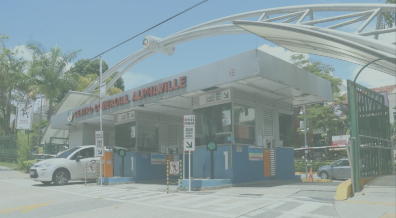

História de Alphaville
Proveniente de um terreno de 500 hectares comprado em 1973, era
um empreendimento voltado inicialmente às indústrias não-poluentes. Foi
erguido no lugar da antiga fazenda Tamboré, comprada pela construtora
dos herdeiros Almeida Prado. A falta de vocação do lugar era um problema,
não se sabia se seria um loteamento de casas de campo para finais de semana
ou um lugar para se morar, mais afastado da cidade.
A implantação deu-se com as vendas de lotes
na década de 1970, primeiramente a proprietários
e executivos de empresas que ali se instalavam,
como a: HP, Sadia, Du Pont e Confab.
O projeto original de Takaoka era construir um centro empresarial em torno da sede brasileira da Hewlett Packard, com um núcleo de comércio, mas depois surgiu a ideia de construir casas para os funcionários da HP, depois para funcionários das outras
empresas e, finalmente, para quem quer que fosse."O resultado é que em dez anos fizemos uma minicidade", declarou Takaoka à revista Veja em São Paulo em 1986.

Devido à necessidade de moradia dos executivos dessas empresas houve, em 1975, o lançamento do AlphaVille Residencial. Assim nascia o embrião do conceito AlphaVille de ocupação ordenada. A instalação de uma multinacional mudou o conceito e até o nome de AlphaVille, que passou de AlphaVille Centro Industrial para AlphaVille Centro Industrial e Empresarial.
Com o passar do tempo
percebeu-se que era mais
rentável a venda residencial
do que a empresarial, sendo
construídos outros Residenciais,
designados com números.O
primeiro se chamou Residencial 1,
e assim por diante.
Na mesma década o bairro verticaliza-se por causa da grande demanda imobiliária, onde mudaram-se profissionais liberais e altos funcionários de empresas da região, antigos moradores da cidade de São Paulo.
No início da década de 1980, era possível comprar terrenos no condomínio pelo preço de um carro, mas a valorização em 1986 já tornava essa comparação obsoleta, embora esse aumento não tenha afastado novos moradores, tanto é que imóveis eram comumente vendidos no máximo uma semanas depois de ser listados e apenas no lançamento do Alphaville 10 foram vendidos duzentos dos setecentos lotes colocados à venda.
Muita gente dizia que se mudava para lá por causa das crianças. Havia poucas, mas rígidas regras: era proibido instalar casas pré-fabricadas nos terrenos dos condomínios, o que ajudou a afastar a ideia de loteamento de fim de semana, e cada quadra não podia comportar mais de 22 casas, com recuo obrigatório de quatro metros na frente, para o jardim. A associação dos Moradores funcionava como poder público e era quem liberava o Habite-se.